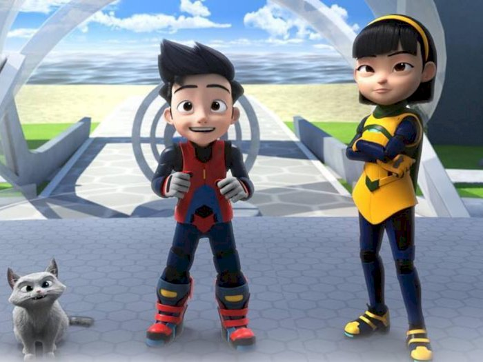

Sinopsis Film

Ali adalah anak lelaki berusia 12 tahun yang telah menjadi agen rahasia di MATA, sebuah agen intelijen rahasia yang melindungi kota Cyberaya. Itu semua terjadi setelah Ali secara tidak sengaja mengaktifkan Infinity Retinal Intelligent System atau IRIS gadget.
Ali adalah satu-satunya yang dapat mengendalikan IRIS ini karena terkoordinasi dengan tubuhnya. Jadi Ali dilatih sebagai mata-mata. Bersama pamannya, Bakar dan agen muda lainnya, mereka berkolaborasi dalam misi BUMI.

Ejen Ali menjadi lebih baik dengan misinya di MATA. Namun, konflik muncul ketika Ali mengetahui bahwa ia bukan lagi satu-satunya yang dapat mengendalikan IRIS. Sekarang MATA telah meningkatkan IRIS ke IRIS NEO yang akan menjadi perangkat dasar untuk semua agen.
Ini membuat Ali mempertanyakan penggunaannya di MATA. Selama waktu ini, seorang individu bernama Niki mendekati Ali dan mengklaim dia tahu mengapa dia kehilangan ibunya.
Sekarang, Ejen Ali perlu melakukan misi aksi dan mengungkap misteri yang mengancam kota Cyberaya, dan mempertaruhkan kesetiaannya kepada MATA sebelum terlambat. Bisakah dia berhasil?
Balik Ke Atas